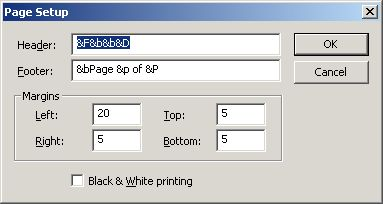
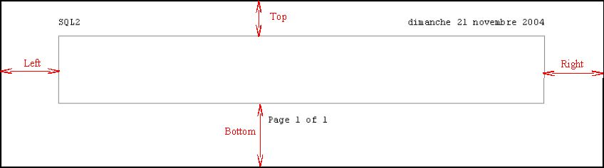

Show a dialog Box to configure printed page.

Header : Text which appears on top of printed pages
Footer : Text which appears on bottom of printed pages
You may use variables to create text :
- &F : Document's name
- &D : Current date
- &p : Page number
- &P : Page count
- &b : Blanks, first use put following
text in center of page, second use put following text in the right of
page.
Margins : size of blank area around printed document
